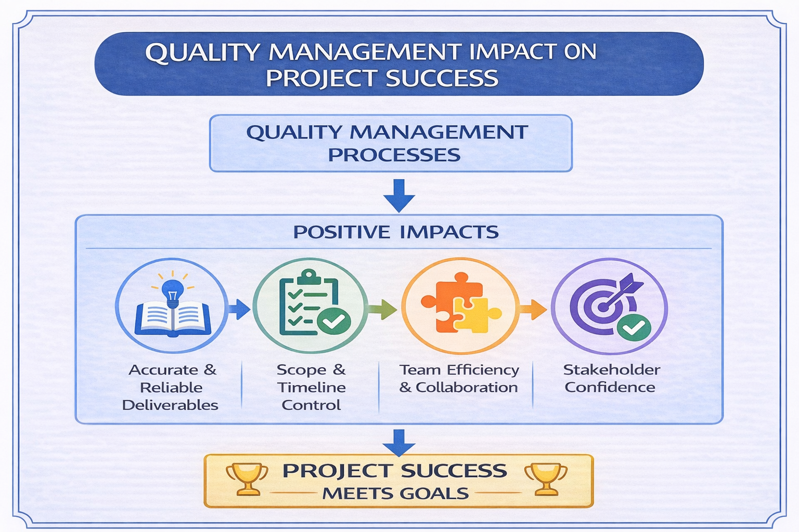

Quality is not about perfection, but about consistently delivering results that meet requirements and user needs.
Quality management is the process of ensuring that a project's deliverables meet defined standards and satisfy stakeholder expectations. It focuses on maintaining and improving quality throughout the project lifecycle.
Quality management is important because it directly influences the success of a project. It ensures that the final outcome is reliable, useful, and aligned with requirements.
Ensures that the final deliverables match what was planned and agreed
High-quality results increase user trust and satisfaction
Early reviews and checks help identify problems before they become costly
Clear quality standards guide consistent and effective decisions
Poor quality can lead to delays, increased costs, and unusable results

Ensuring deliverables are accurate and reliable
Helping projects stay within scope and timelines
Improving team efficiency and collaboration
Increasing stakeholder confidence in the project
Quality management is essential for delivering successful projects. It ensures that the project outcomes meet expectations, provide value to users, and contribute to overall project success.
Quality is not about perfection, but about consistently delivering results that meet requirements and user needs.
American Society for Quality. (n.d.). What is quality management?. Retrieved from https://asq.org/quality-resources/quality-management
Project Management Institute. (n.d.). Project quality management. Retrieved from https://www.pmi.org/learning/library/project-quality-management-8417
Scrum.org. (n.d.). Quality management in Scrum projects. Retrieved from https://www.scrum.org/resources/quality-management-scrum-projects